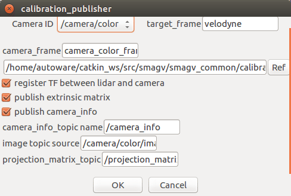

14.物体検出（センサフュージョン）
キャリブレーションパラメタによるセンサフュージョンを行う。（点群、画像連携による障害物検出）
※設定詳細は、「Autoware 自動運転ソフトウェア入門」P133参照
事前準備
事前に以下の準備をしておくこと。
準備1
センサキャリブレーション
センサキャリブレーションによる、パラメタの作成を行う。（付録2参照）
groundトピックの発行
groundトピックの発行設定を行う。（以下いずれかをチェックする。）
内容については、10章参照のこと。

準備2
以下のいずれかを準備しておくこと。
- velodyne、SMAGVの起動
- ROSBAG再生の一時停止
キャリブレーションパブリッシャの起動
calibration_publisher項目の設定をする。

- Runtime Managerの［Sensing］タブを選択。
- calibration_publisherボタン押下でパラメタ設定画面を表示する。

- calibration_publisherパラメタ項目を適宜設定する。
- ［OK］ボタン押下で前画面に戻る。
| # | 項目名 | 内容 | 単位 | smagv妥当値 |
|---|---|---|---|---|
| 1 | Camera ID | 画像データID | - | /camera/color |
| 2 | target_frame | 点群データフレーム名 | - | velodyne |
| 3 | camera_frame | 画像データフレーム名 | - | /camera_color_frame |
| 4 | - | キャリブレーションパラメタpath | - | /hoge/YYYYMMDDHHMMSS_autoware lider_camera_calibration_yaml |
| 5 | register TF ･･･ | - | チェックあり | |
| 6 | publish extrinsic ･･･ | - | チェックあり | |
| 7 | publish camera ･･･ | - | チェックあり | |
| 8 | camera_info_topic_name | - | /camera_info | |
| 9 | image_topic_source | - | /camera/color/image_raw | |
| 10 | projection_matrix_topic | - | /projection_matrix ? |
※処理途中で本項目を再度設定した場合は、後述の「range_vision_fusion」項目に影響するため、range_vision_fusion項目も再設定、起動を行うこと。
点群クラスタの起動
点群クラスタと起動する。

物体検出アルゴリズムの起動
以下のいずれかを起動する。内容については、13章参照のこと。
- SSD
- YOLO v2
- YOLO v3
range_vision_fusionの起動
range_vision_fusion項目の設定をする。

- Runtime Managerの［Computing］タブを選択。
- range_vision_fusion項目［app］押下でパラメタ設定画面を表示する。
- range_vision_fusionパラメタ項目を適宜設定する。
- ［OK］ボタン押下で前画面に戻る。
| # | 項目名 | 内容 | 単位 | smagv妥当値 |
|---|---|---|---|---|
| 1 | detected_objects_range | 物体検出（点群）トピック名 | - | /detection/lider_detector/objects |
| 2 | detected_objects_range | 物体検出（画像）トピック名 | - | /detection/lider_detector/objects |
| 3 | camera_info_src | - | /camera/color/camera_info | |
| 4 | 調整中 | - |
- range_vision_fusion項目チェックBOXをチェックありにする。
RVizの設定
RViz起動後、defaultのRViz設定ファイルを開く。（~/Autoware/ros/src/.config/rviz/default.rviz）
その後、以下設定を行う。
Image Viewer Pluginパネルの表示
Image Viewer PluginパネルをRViz上に表示する。
内容については、13章参照のこと。

- 画面のプルダウンメニューから以下を選択する。（rosbag再生一時停止の場合、選択項目が見つからないことがあるので、いったん一時停止を解除し、再度一時停止する。）
| # | 項目名 | 内容 | smagv妥当値 |
|---|---|---|---|
| 1 | Image Topic | 画像データトピック名 | /camera/color/image_raw |
| 2 | Object Rect Topic | 矩形オブジェクトトピック名 | /detection/fusion_tools/objects |
表示重なりトピックの非表示
RViz上に表示が重なっていて見づらくしているPoints Rawトピックを非表示にする。
内容については、13章参照のこと。
センサフュージョン検出マーカーの表示
センサフュージョン検出マーカーの表示設定を行う。

- マーカー表示「Detection Range」項目の「Marker Topic」のプルダウンメニューから「/detection/fusion_tools/objects_markers」を選択する。
認識結果の確認
認識結果の種類、矩形、マーカー、距離等が表示されることを確認する。

その他
- ROSBAG再生を一時停止している場合は、再生再開をする。
正しく表示しないとき
正しく表示しない場合、以下を実施しすることで改善する場合がある。
RVizの［Displays］ウィンドウ－［Global Options］－［Fixed Frame］を見直す。
URDFによるTF定義では、Lider⇔カメラのTFリンクが辿れなくなる（ような動作になっている）。明示的にTFを定義し直すこと。（NDT matchingと同時利用する場合は、再起動した方が手っ取り早いかも...）
以下仮対策
| 種類 | 仮対策方法 | 備考 |
|---|---|---|
| rosbag再生によるシミュレーション時 | rosbagを停止（一時停止でない）し、初めから再生する。 | - |
| roslaunch実行による実機稼働時 | roslaunchを停止し、再度roslaunchを実行する。 | - |
・TFのツリー構造見直しで対応可能かも...あとで検討する。